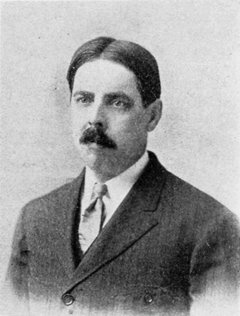
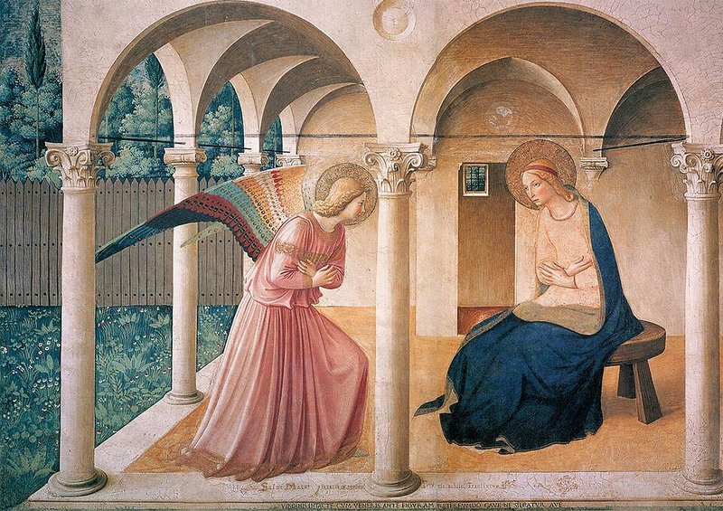

聖人の光輪と、将校の偏り
1920年、エドワード・ソーンダイクエドワード・ソーンダイク（Edward Thorndike, 1874–1949）
アメリカの心理学者。動物の学習行動の研究で知られ、「効果の法則」を提唱した。コロンビア大学で長年教鞭をとった。はある奇妙なパターンに気づいた。第一次世界大戦後、米軍の上官たちに部下の評価を依頼した研究でのことだ。知性、体格、リーダーシップ、人格——本来は別々に判断すべき項目が、なぜか強く連動していた。体格のよい兵士は「知性も高い」と評価され、容姿の端正な兵士は「人格も優れている」とされた。上官たちは部下と会話すらしていない。

エドワード・ソーンダイク
Edward L. Thorndike（1874–1949）
コロンビア大学の心理学者。動物の試行錯誤学習（猫のパズルボックス実験）で知られるが、応用心理学にも大きく貢献した。1920年に「心理学的評定における恒常的誤差」を発表し、ハロー効果に名前を与えた。
ソーンダイクは論文にこう記した。「相関が高すぎ、均一すぎる」——体格と知性の相関相関（correlation）
2つのものが連動して動く度合い。0なら完全に無関係、1なら完全に連動。0.3は「弱い関連がある」程度で、体格と知性でこの数値が出るのは不自然に高い。が .31、体格とリーダーシップの相関が .39。本来なら体格と知性は無関係に近いはずだ。だが評価者は、ある一つの好印象を得ると、そこから他のあらゆる特性を「良い」方向に引き上げてしまっていた。
"The correlations are too high and too even."
相関が高すぎ、そして均一すぎる。
— エドワード・ソーンダイク『A Constant Error in Psychological Ratings』（1920年）
ソーンダイクはこの現象をハロー効果（halo effect）と名付けた。「ハロー」とは、中世の宗教画で聖人の頭上に描かれる光輪（こうりん）のことだ。光輪を見た瞬間に「この人は聖なる存在だ」と判断が決まる——そのメタファーである。一つの目立つ特徴が、その人物の全体像に「光」を投げかけ、あらゆる評価を底上げしてしまう。

フラ・アンジェリコ『受胎告知』（1440年頃）｜フレスコ｜サン・マルコ修道院蔵（フィレンツェ）｜大天使ガブリエルと聖母マリアの頭上に金色の光輪（ハロー）が描かれている。この光輪が「ハロー効果」の語源。聖人の光輪を見た瞬間に「この人は善い」と判断する——ソーンダイクはそのメタファーを認知バイアスの名前に使った。
ソーンダイク（1920）の実験結果をもとにした概念図。矢印の方向は「推論の流れ」を示す。実際の相関係数は .28〜.39と報告されている。
重要な点がある。これは「頭の悪い人が引っかかる」問題ではない。ソーンダイクの実験で評価者を務めたのは軍の上官——判断力を買われて指揮を任された人々だ。のちの研究でも、学歴や職業を問わず効果が確認されている。自分は合理的だと思っている人ほど、この偏りに気づきにくい。
| 評価された特性ペア | 相関係数 | 本来の予想 |
|---|---|---|
| 体格 ↔ 知性 | .31 | ほぼ無関係 |
| 体格 ↔ リーダーシップ | .39 | 弱い相関 |
| 体格 ↔ 人格 | .28 | ほぼ無関係 |
| 知性 ↔ リーダーシップ | .51 | 中程度 |
ソーンダイクの1920年論文から。137人の航空士官候補生を評価した上官のデータ。体格と知性のように、論理的に無関係な特性のペアでさえ高い相関が見られた。
「美しいは善い」——半世紀後の実証
ソーンダイクの発見から52年。1972年、ミネソタ大学のカレン・ディオンカレン・ディオン（Karen Dion, 1945–2008）
カナダの社会心理学者。「What is beautiful is good」の共著者。のちにトロント大学で長年研究した。、エレン・バーシャイドエレン・バーシャイド（Ellen Berscheid, 1936–）
アメリカの社会心理学者。対人魅力と親密な関係の研究で知られ、ミネソタ大学で長年教鞭をとった。、エレイン・ウォルスターエレイン・ウォルスター（Elaine Walster, 1937–）
のちにエレイン・ハットフィールドに改姓。衡平理論や対人魅力の研究で知られるアメリカの社会心理学者。の3人が、ハロー効果を鮮やかに実証する実験を発表した。タイトルは「What is beautiful is good」——美しいものは善（よ）い。
実験はシンプルだ。60人の学生に3枚の写真を見せた。魅力的な人、平均的な人、魅力的でない人。そして「この人はどんな性格だと思うか」「人生は成功していると思うか」と尋ねた。結果は明白だった。魅力的な人物の写真を見た被験者は、その人物を社交的で、知的で、温かく、有能で、人生が充実していると判断した。3枚の写真は顔が違うだけだ。性格も経歴も何一つわからない。
Dion, Berscheid, & Walster（1972）の実験結果を概念化。同一の性格・経歴情報が与えられていないにもかかわらず、顔写真の魅力度だけで全評価が変動した。
この研究のインパクトは実験の巧みさだけではない。「美しい人は良い人生を送る」という推定が、男性被験者でも女性被験者でも同じように現れたことだ。性別に関係なく、容姿から性格や能力を推定するという認知の構造は同じだった。ディオンらはこれを「美しいは善い」ステレオタイプと呼んだ。
ソーンダイクの実験で、上官たちは部下の4つの特性を評価した。下のボタンを順に押してほしい。1つ押すごとにグラフに棒が1本追加される。
グラフの赤い棒が報告された相関係数、薄い灰色の棒が「本来ならこのくらいのはず」という予想値。差が大きいほど、ハロー効果が強く働いていたことを意味する。
ソーンダイク（1920）の論文 "A Constant Error in Psychological Ratings" から。137人の航空士官候補生に対する上官の評価データ。相関係数は0（無関係）〜1（完全に連動）の範囲で、0.3を超えると統計的に意味のある関連とされる。
誤解
ハロー効果は「見た目がいい人が得をする」という話
実際は
見た目に限らない。声、肩書き、出身校、最初の一言——あらゆる第一印象が他のすべての評価に波及する現象。容姿は最も研究されたトリガーの一つにすぎない
誤解
自分で気をつければ防げる
実際は
1981年のウェッツェルらの研究で、ハロー効果の存在を教え「影響されないように」と指示しても効果は消えなかった。知識だけでは防御にならない
誤解
良い方向にだけ働く
実際は
負の方向にも同じ構造で働く。ソーンダイク自身が「正のハローと負のハロー」の両方を記述している。負の方向は「ホーン効果（角の効果）」とも呼ばれる
あなたの判断を試す
ここからは実際に手を動かしてほしい。4枚の写真が表示される。すべて同一人物だ。顔は同じ。年齢も同じ。変わっているのは服装と身だしなみだけ——それだけで、あなたの判断がどう変わるかを確かめる。
以下の4枚の写真を見てください。直感で答えてください。
※ これらの写真はすべてAIが生成した架空の人物です。実在の人物ではありません。
![スーツ姿の男性]()
A
![白衣姿の男性]()
B
![作業着姿の男性]()
C
![Tシャツ姿の男性]()
D
この人物について、直感で選んでください。
最も年収が高そうなのは？
最も信頼できそうなのは？
最もリーダーシップがありそうなのは？
なぜ、たった一つの特徴が全体を支配するのか
ハロー効果が消えないのは、それが「間違い」ではなく、脳の情報処理のヒューリスティックヒューリスティック（heuristic）
複雑な問題を素早く判断するための「近道」。正確さを犠牲にして速度を取る脳の処理方式。日常生活のほとんどの判断はこれで動いている。として組み込まれているからだ。限られた情報から素早く全体像を作る——それは多くの場面で生存に有利だった。だが、その「近道」が裏目に出る場面がある。
ハロー効果が維持される認知プロセスの概念図。最終段階の「自己成就予言」は、第一印象に基づく好待遇が実際の成果につながり、最初の印象が「的中した」と見なされる現象。
4つのステップ
第一印象の自動形成
100ミリ秒で決まる全体評価
顔を見て0.1秒。それだけで脳は「信頼できそう」「有能そう」「支配的そう」の判断を下す。心理学者のアレクサンダー・トドロフらの研究によれば、この瞬間的な判断はその後じっくり考えても大きくは変わらない。日常例: 就職面接で候補者がドアを開けて歩いてくる最初の数秒で、面接官の中に「良さそうだ」か「微妙だ」の感覚が生まれている。
全特性への波及
「光」が広がるように
良い第一印象ができると、脳はその人物の未知の特性を「良い」方向で補完する。容姿がいい → 知的だろう → 誠実だろう → リーダーシップもあるだろう。これはいちいち考えているわけではなく、自動的に起きる。日常例: 声の良いプレゼンターの提案内容が、声の悪いプレゼンターの同じ内容より「説得力がある」と評価される。
行動の変化
好印象は優遇を生む
ハロー効果は評価にとどまらず、行動を変える。好印象の相手にはより多くの機会を与え、ミスに対して寛容になり、アドバイスに従いやすくなる。日常例: 見た目の良い店員から商品を勧められると購入率が上がる。容姿の良い教師は生徒から高い評価を受けやすく、より良い学校に異動しやすい。
自己成就予言 ※
偏りが「真実」に変わる
ここが最も厄介な段階だ。好印象を持たれた人は実際により多くの機会を得て、より良い成果を出す。すると周囲は「やはりあの人は有能だった」と確認する。偏った評価が、結果的に正しかったように見えてしまう。日常例: 身長が高い新入社員がリーダーに抜擢される → 経験を積んでさらに成長する → 「やっぱり最初から見込みがあった」と上司が思う。身長と能力に因果関係はないが、機会の不均等が実力差を作り出す。
※ 自己成就予言（self-fulfilling prophecy）: 「こうなるだろう」と信じることで、その信念に沿った行動をとり、結果的に本当にそうなってしまう現象。ハロー効果では、好印象の人に機会を多く与えた結果、実際に成果が出て「やっぱりあの人は優秀だった」と確認されるループが生まれる。
光輪の系譜——100年の研究史
以下の年表で、● はハロー効果研究の核心となる出来事、○ は関連する研究や社会的出来事を示す。
1907
フレデリック・ウェルズの先駆的観察
文学作品の評価において、一つの項目の評価が他の項目に波及する傾向を記録した。「ハロー効果」の命名には至らなかったが、現象を最初に文書化した研究とされる。
1920
ソーンダイク「恒常的誤差」を発表
137人の航空士官候補生の評価データを分析し、特性間相関の異常な高さを報告。「ハロー効果」と命名した。心理学的評価の信頼性に疑問を投げかけた最初の論文。
1946
ソロモン・アッシュの印象形成研究
「温かい」と「冷たい」の一語を変えるだけで、同一人物に対する全体印象が劇的に変わることを実証。ハロー効果が「中心特性」に依存することを示した。
1972
ディオンら「What is beautiful is good」
容姿の魅力度だけで性格・能力・人生の成功がすべて推定されることを実験で示した。「美しいは善い」ステレオタイプという概念を確立。被引用数は数千にのぼる。
1977
ニスベットとウィルソンの意識研究
同じ講師を「温かい態度」と「冷たい態度」で演じさせた映像を見せたところ、温かい版では外見・アクセントまで好意的に評価された。しかも被験者は、自分が印象に影響されたことを否定した。
1980
スチュワートの法廷研究
実際の裁判を傍聴し、74人の被告の容姿を評定。容姿の良い被告は有意に軽い刑を受けており、収監を免れる確率は2倍だった。
2004
ジャッジとケーブルの「身長プレミアム」研究
約8,500人の追跡データを分析。身長が1インチ（2.5cm）高くなるごとに年収が約789ドル増加。30年のキャリアで約16万6千ドルの差になると試算。
2024
クレイマーらの動画ベース法廷研究
従来の写真ではなく動画クリップを使い、60人の「被告」の容姿と有罪判断の関係を調査。容姿と有罪判断の間に強い関連は見られなかったが、犯罪の種類によって異なる傾向が示された。
ケネディ対ニクソン 第1回テレビ討論会（1960年9月26日）｜AP通信撮影｜シカゴ WBBM-TVスタジオ｜テレビで見た視聴者はケネディの勝ち、ラジオで聴いた聴取者はニクソンの勝ちと感じたとされる。ニクソンは退院直後で顔色が悪く、化粧を拒否した。外見の印象が政治判断にまで波及した歴史的な出来事。
光輪は消せない。だが、知ることには意味がある
ハロー効果が厄介なのは、「知っていても防げない」という性質だ。1981年のウェッツェルらの追試では、被験者にハロー効果の存在を詳しく説明し、「影響されないように」と動機づけしても、効果はほとんど弱まらなかった。知識だけでは認知の構造は変わらない。
では、なぜ知る意味があるのか。個人の意志力で偏りを消すのは難しくても、環境を変えることで偏りの影響を減らすことはできるからだ。以下の3つは万能ではないが、構造的な対策として一定の効果がある。
"Global evaluations alter evaluations of attributes about which the individual has information fully sufficient to allow for an independent assessment."
全体的な評価は、独立に判断するのに十分な情報がある個別の特性の評価すら書き換えてしまう。
— リチャード・ニスベット＆ティモシー・ウィルソン『The Halo Effect: Evidence for Unconscious Alteration of Judgments』（1977年）
対策1: 構造化面接構造化面接（structured interview）
すべての候補者に同じ質問を同じ順番で行い、評価基準を事前に決めておく面接形式。自由な会話形式（非構造化面接）に比べて、ハロー効果や類似性バイアスの影響を大幅に減らせる。——評価の基準を事前に決め、すべての候補者に同じ質問を同じ順番で行う。面接官の「直感」が介入する余地を構造的に減らす。ただし、面接官が基準を無視して直感に頼り始めれば効果は薄れる。
対策2: ブラインド評価ブラインド評価（blind evaluation）
評価対象の属性（名前、性別、容姿、出身校など）を隠して評価する手法。オーケストラのオーディションでスクリーンの後ろで演奏させる「ブラインドオーディション」が有名。——容姿・名前・出身校など、本来評価に無関係な情報を物理的に遮断する。オーケストラのブラインドオーディションが代表例で、導入後に女性奏者の採用率が上がったことが知られている。ただし、すべての場面で使える手法ではない。
対策3: 悪魔の代弁者悪魔の代弁者（devil's advocate）
意思決定の場面で、あえて反対意見を述べる役割を誰かに割り当てる手法。自分の判断への確信が強いときほど有効。もともとはカトリック教会で聖人の候補に対する反論を行う役職名。——自分の評価に確信を持ったとき、あえて反対の立場からチェックする。「もしこの人が地味な服を着ていたら、同じ評価をしただろうか」と自問する。完璧には機能しないが、少なくとも立ち止まるきっかけにはなる。
いずれの対策にも共通するのは、「自分の判断力を過信しない」という前提だ。ソーンダイクの実験から100年以上が経った。私たちは心理学を学び、バイアスの名前を知り、この記事を読んでいる。それでも、次に会う人の第一印象が「すべての評価」を引きずるだろう。知っているだけでは変わらない。だから、環境を変える。判断の構造を変える。それが、光輪を消せない人間にできる、おそらく最も現実的な対処だ。
映画『マネーボール』（2011年）
ブラッド・ピット演じるビリー・ビーンが、スカウトたちの「見た目で選ぶ」評価を統計データで覆す物語。「彼は"いい体格"をしている」「彼女は"良い顔つき"をしている」といったハロー効果的な評価が、データ分析の前に崩れていく過程が描かれている。
ダニエル・カーネマン『ファスト&スロー』（2011年）
ノーベル経済学賞受賞者カーネマンは、ハロー効果を「システム1（速い思考）」の代表例として取り上げている。第一印象から全体像を作り上げる脳の自動処理が、いかに日常の判断を歪めているかを平易に解説した一冊。
A Constant Error in Psychological Ratings
すべてはここから始まった。わずか数ページの短い論文だが、「相関が高すぎる」という観察から100年の研究が生まれた。原文に触れると、ソーンダイクの冷静な筆致が印象的だ。
「美しいは善い」——この強烈なタイトルが社会心理学の教科書に刻まれた。写真を3枚見せるだけのシンプルな実験が、容姿と性格判断の根深いつながりを暴いた。
The halo effect: Evidence for unconscious alteration of judgments
ハロー効果が無意識に作動すること、そして本人がその影響を自覚できないことを実証した。この論文を読むと「自分だけは大丈夫」という自信が揺らぐはずだ。
The effect of physical height on workplace success and income
身長と年収の関係を約8,500人のデータで追跡。2.5cm高いごとに年収が約789ドル上がるという結果は、ハロー効果が金銭に直結することを示す不穏なデータだ。
ハロー効果はソーンダイク（1920）以来、100年以上にわたり繰り返し再現されている。容姿と評価の関連を示すDion et al.（1972）の研究、意識的統制が困難であることを示すNisbett & Wilson（1977）の研究は、いずれも社会心理学の古典として広く引用されている。ただし、近年の研究（Kramer et al., 2024）は実験方法の精緻化により、効果の大きさや条件依存性について再検討が進んでいることも指摘している。法廷での効果については、犯罪の種類や実験デザインによって結果が分かれることに注意が必要。